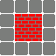

The deals with "maps" or "levels" and mapping from map descriptions to graphical tiles to display. In and of itself, the maps do not generate any graphics, they only specify what sort of tile is where.
This documentation will mention "tile type". A tile type is a keyword, naming a specific type of tile (door, wall, floor, anything else that is specified in a map file).There are two different ways of defining a tile, depending on if the tile has "in-game self-action" or not. A tile that acts within the game (other than as an obstacle) is called a generator.
One tile-mapping is pre-defined. The character "S" signifies both a tile of type :floor and a starting-position for the map. This is at the moment pre-coded and not likely to change.
A normal tile only needs a character that defines it and a tile
type. They are declared using the define-tile macro:
(define-tile character tile-type)
A generator is like a normal tile, but it also has a generator class
associated with it (one of the classes exported from the GAMES-2D
package) that takes care of its in-game action. Generators are
declared using the define-generator macro:
(define-generator character tile-type generator-type)
Maps are defined in text files, with a fairly simple format. The first line has the map level number, the width and the height of the map, as numbers. Then, the map follows, using characters mapped to tile types (designated by CL keywords) in the code. The type keywords are used in the graphics library to map to bitmaps.
An example from Gatlopp (the first level) looks like:
1 10 8 ########## # S # # $ # # $$ # # # # ## # # ### # # ># # ##########
If tiles (like, say, door and wall tiles) don't naturally extend all the way to the edges of the tile, the maps library has built-in functionality to help that happen.
The functionality is exposed via the define-type-from-map macro:
(define-type-from-map tile-type &rest
character)
Doing this means that when tile-from-map finds a tile-type tile, it will know to look in all four cardinal directions and see if any of the specified characters are there. If so, it will return a "derived" tile type (essentially another keyword like :base-ensw). The keywords for the connecting types will have one or more of the letters "ensw" (in that order), signifying in what directions the tile joins up to other tiles.
If the tile doesn't join up, the base type is returned.
As an example, in Gatlopp, the wall tile doesn't extend to the edge
and without using the multi-tile approach, a section of wall from the
map file above might've looked like:

If we had declared a multi-tiled type:
(define-tile-from-map wall #\# #\+) ; we want to join to walls and doorsit would have looked like: